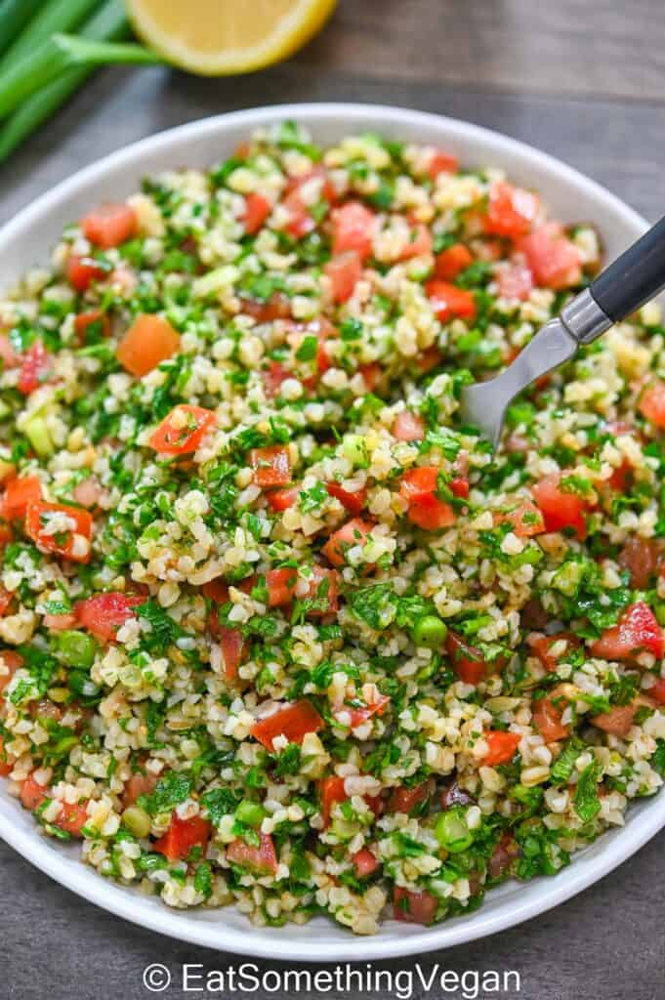

Tabouli Recipe

Description
Tabouli is a wholesome dish very popular in
Mediteranean cuisine. It represents the area it comes
from very well, in terms of the diverse delicious
ingredients it contains and with its fresh and slightly
tangy taste.
Ingredients
- ½ cup fine bulgur wheat
- 4 firm Roma tomatoes, very finely chopped
- 1 English cucumber (hothouse cucumber), very finely
chopped
- 2 bunches parsley, part of the stems removed,
washed and well-dried, very finely chopped
- 12-15 fresh mint leaves, stems removed, washed,
well-dried, very finely chopped
- 4 green onions, white and green parts,
very finely chopped
- Salt
- 3-4 tablespoon lime juice (lemon juice,
if you prefer)
- 3-4 tablespoon Early Harvest extra virgin
olive oil
- Romaine lettuce leaves to serve, optional
Steps
- Wash the bulgur wheat and soak it in water for
5-7 minute. Drain very well (squeeze the bulgur wheat
by hand to get rid of any excess water). Set aside.
- Very finely chop the vegetables, herbs and
green onions as indicated above. Be sure to place
the tomatoes in a colander to drain excess juice.
- Place the chopped vegetables, herbs and green onions
in a mixing bowl or dish. Add the bulgur and season
with salt. Mix gently.
- Now add the the lime juice and olive oil and
mix again.
- For best results, cover the tabouli and refrigerate
for 30 minutes. Transfer to a serving platter.
If you like, serve the tabouli with a side of pita
and romaine lettuce leaves, which act as wraps or
"boats" for the tabouli.